我们相信，一份小小的善意也能带来改变。通过市场调研、原创IP设计与社群运营，将爱心转化为实实在在的救助力量。
一群热爱动物的大学生，用专业所学为流浪动物做一点实事。
项目以数据驱动调研为起点，将流浪动物化为原创动漫IP形象，衍生出钥匙扣、抱枕等实体周边。通过QQ私域社群精细化运营，最终实现总盈利8,620元，收益全额用于流浪动物的绝育与救助，累计帮助超过300只小生命。
587份问卷与深度访谈，让我们真正理解了用户想要什么。
设计覆盖消费偏好、情感诉求、价格敏感度的问卷，14天内回收587份有效样本，有效率93%。
587 份有效通过聚类分析发现，62%的目标用户属于"情感陪伴型"消费群体——她们购买不只是为了产品，更是为了陪伴与善意。
62% 情感陪伴型与典型用户一对一交流，挖掘出"陪伴感""公益认同""萌系审美"三大核心诉求。
需求洞察闭环消费动机聚类分析
超六成用户因"情感陪伴"购买，以在校大学生为主，验证了IP情感化路线的可行性。
单件周边可接受价格区间
76.8%用户偏好25元以下（学生群体为主），主力定价3.8-12元，以亲民价格让更多人参与公益。
最想购买的周边品类 TOP5
抱枕、钥匙扣、贴纸为TOP3，结合成本结构最终确定8款爆品组合。
影响购买的最主要因素
"IP打动我"和"公益属性"是前两大决策因素，产品策略应强化故事叙事与公益透明化。
每一只流浪动物都有自己的故事，我们把这些故事变成了可以带走的温暖。
以真实流浪动物为原型，赋予每只角色独特的名字、性格和故事线，让每一次购买都是一次有温度的连接。
钥匙扣、抱枕、贴纸、帆布袋……覆盖不同价格带，让爱心可以被"随身携带"。
搭建品类矩阵评估模型，从市场需求、成本结构、竞争强度三个维度筛选，最终锁定8款高潜爆品。
8 款爆品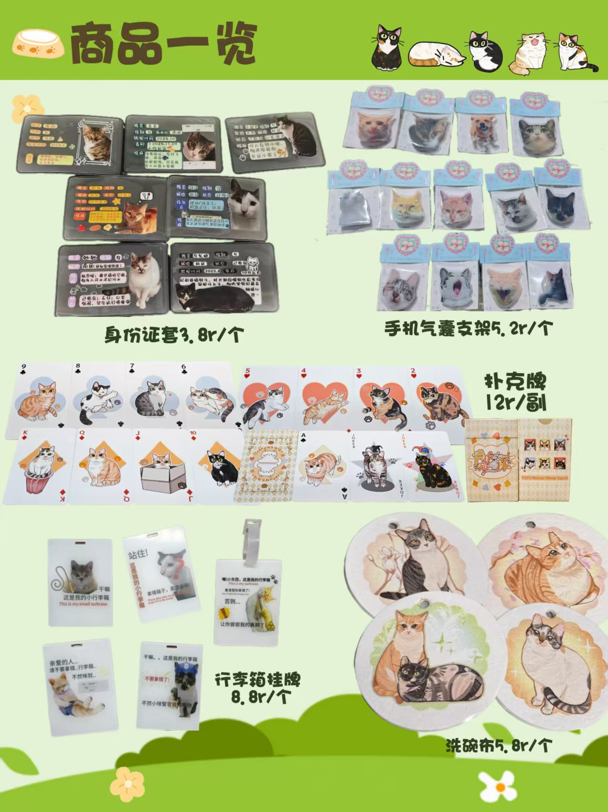
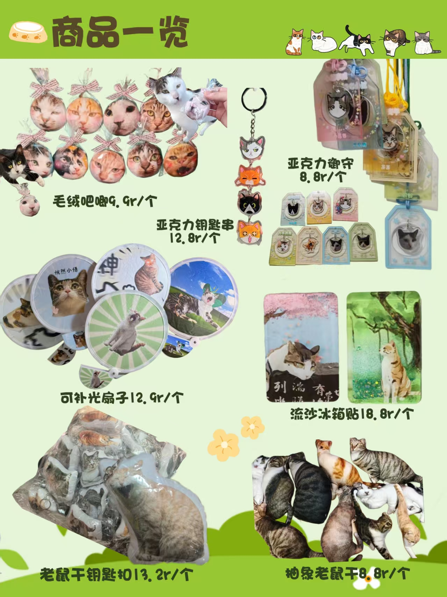
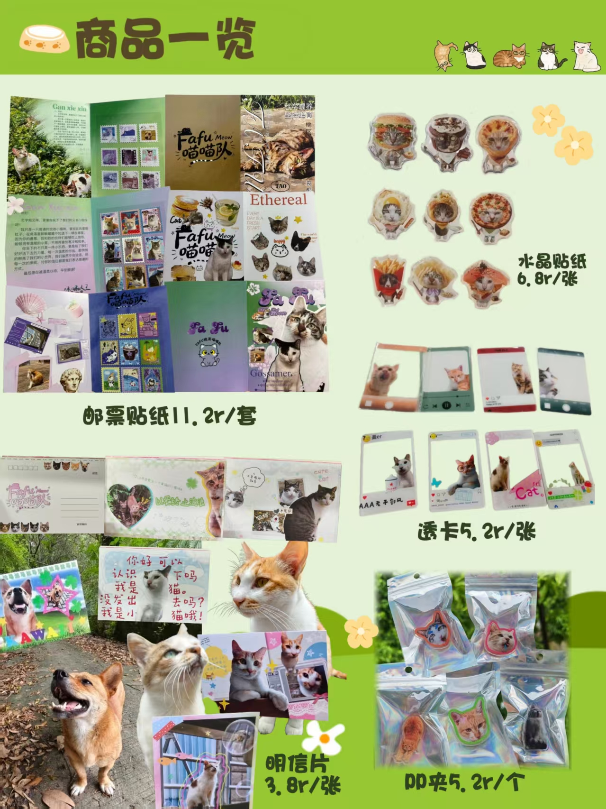
FAFU 校园 TNR（捕捉-绝育-放归）行动记录。每一台手术背后，都是善款的落地。
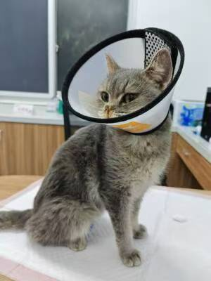
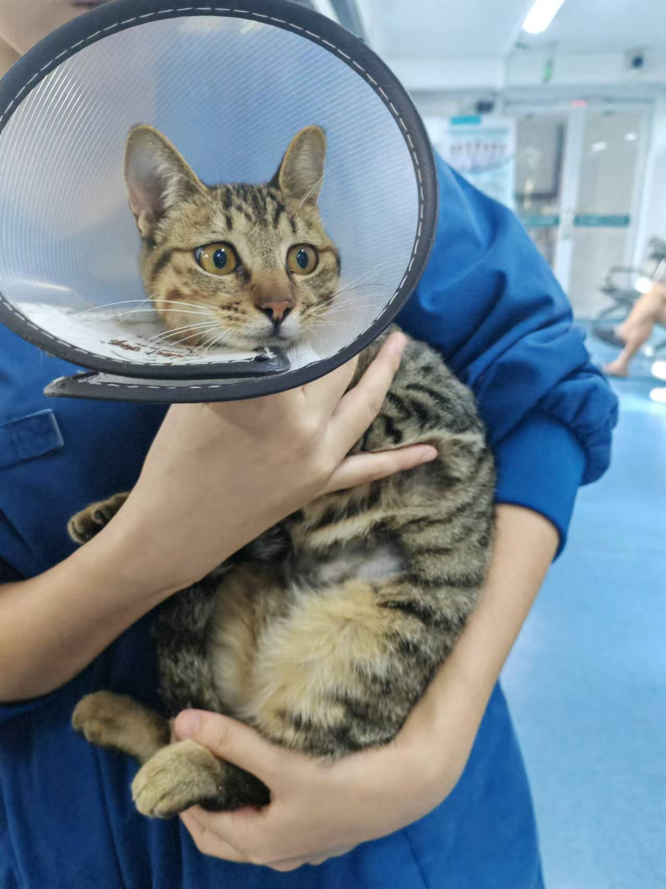
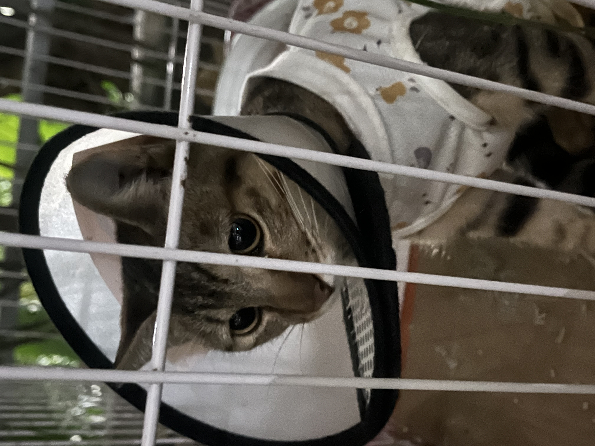
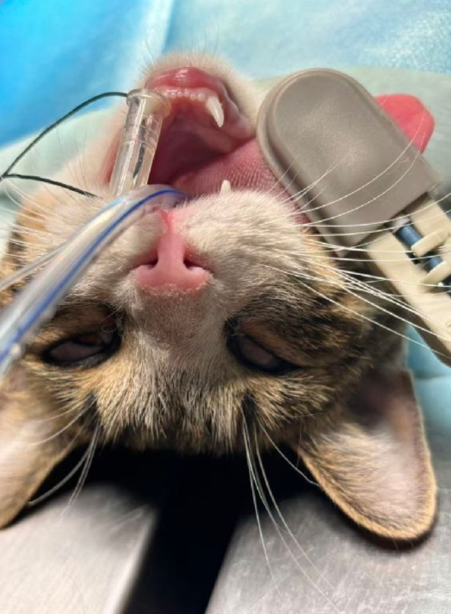
| # | 名字 | 性别 | 出没地 | 救助日期 | 领养 |
|---|---|---|---|---|---|
| 1 | 楚雨荨 | ♀ | 东苑 | 2024.9.18 | 否 |
| 2 | 丧彪 | ♂ | 东苑 | 2024.9.23 | 否 |
| 3 | 花花 | ♀ | 东苑 | 2024.9.23 | 是 |
| 4 | 奥利奥 | ♂ | 东苑 | 2024.9.28 | 否 |
| 5 | 脏脏 | ♀ | 东苑 | 2024.9.28 | 是 |
| 6 | 多多 | ♀ | 东苑 | 2024.10.2 | 是 |
| 7 | 元宝 | ♂ | 东苑 | 2024.10.6 | 否 |
| 8 | 肚肚 | ♀ | 东苑 | 2024.10.8 | 是 |
| 9 | 库洛米 | ♀ | 东苑 | 2024.10.30 | 是 |
| 10 | 点点 | ♀ | 教学楼 | 2024.11.13 | 是 |
| 11 | 丧彪（桃） | ♂ | 桃区 | 2024.11.15 | 否 |
| 12 | miyo | ♂ | 东区 | 2024.11.18 | 是 |
| 13 | 小竹 | ♀ | 快递站 | 2024.11.30 | 是 |
| 14 | 翠翠啵 | ♂ | 东苑 | 2024.12.1 | 否 |
| 15 | 橙汁 | ♂ | 北区 | 2024.12.1 | 是 |
| 16 | 瓜瓜 | ♀ | 东苑 | 2024.12.1 | 是 |
| 17 | 简粥 | ♂ | 桃区 | 2024.12.1 | 否 |
| 18 | 果果 | ♀ | 东苑 | 2024.12.2 | 是 |
| 19 | 小黑 | ♀ | 桃区 | 2024.12.3 | 是 |
| 20 | 海淘 | ♂ | 北区 | 2024.12.8 | 否 |
| 21 | 南瓜 | ♂ | 桃区 | 2024.12.6 | 否 |
| 22 | 牛轧糖 | ♀ | 桃区 | 2024.12.11 | 是 |
| 23 | 豆包 | ♀ | 桃区 | 2024.12.11 | 是 |
| 24 | 大圣 | ♂ | 北区 | 2024.12.11 | 是 |
| 25 | 毛球 | ♀ | 北区 | 2024.12.11 | 是 |
| 26 | 扑扑（小圣） | ♂ | 北区 | 2024.12.13 | 是 |
| 27 | 蜱蜱 | ♀ | 北区 | 2024.12.14 | 是 |
| 28 | 元宝 | ♂ | 桃区 | 2024.12.14 | 否 |
| 29 | 糖橙 | ♀ | 东门 | 2024.12.15 | 是 |
| 30 | 吃吃 | ♀ | 北区 | 2024.12.15 | 是 |
| 31 | 小澈 | ♂ | 南区 | 2024.12.23 | 是 |
| 32 | 爆米花 | ♂ | 桃区 | 2024.12.27 | 否 |
| 33 | 小豹 | ♂ | 东苑 | 2024.12.27 | 否 |
| 34 | 碗碗 | ♂ | 旗山 | 2024.12.29 | 否 |
| 35 | 马达 | ♂ | 南区 | 2025.1.4 | 是 |
| 36 | 校霸 | ♂ | 桃区 | 2025.1.5 | 否 |
| 37 | 大愿 | ♂ | 东苑 | 2025.1.8 | 否 |
| 38 | 芝麻糊 | ♂ | 桃区 | 2025.1.13 | 是 |
| 39 | 梨花 | ♀ | 桃区 | 2025.1.17 | 是 |
| 40 | 岁岁 | ♀ | 南区 | 2025.2.2 | 是 |
| 41 | 麻糍 | ♂ | 桃区 | 2025.2.12 | 是 |
| 42 | 花生酱 | ♂ | 桃区 | 2025.2.12 | 是 |
| 43 | 蛋黄 | ♂ | 东苑 | 2025.2.15 | 否 |
| 44 | 小叭 | ♀ | 南区 | 2025.2.16 | 是 |
| 45 | 冰沙 | ♂ | 北区 | 2025.3.20 | 是 |
| 46 | 杰奎琳 | ♀ | 北区 | 2025.3.20 | 是 |
| 47 | 蛋花儿 | ♀ | 桃区 | 2025.3.24 | 是 |
| 48 | 腊八 | ♀ | 博学楼 | 2025.3.27 | 是 |
| 49 | 元穗 | ♀ | 博学楼 | 2025.3.29 | 是 |
| 50 | 年年 | ♂ | 田间实验室 | 2025.4.5 | 否 |
| 51 | 小愧 | ♂ | 北区 | 2025.5.6 | 是 |
| 52 | 粤利粤 | ♀ | 东苑 | 2025.5.7 | 是 |
| 53 | 七仔 | ♂ | 东苑 | 2025.5.11 | 否 |
| 54 | 杜杜 | ♂ | 兰苑 | 2025.5.13 | 否 |
| 55 | 小凡 | ♂ | 兰苑 | 2025.5.14 | 否 |
| 56 | 二条 | ♂ | 诚智楼 | 2025.5.15 | 否 |
| 57 | 四条 | ♂ | 诚智楼 | 2025.5.15 | 否 |
| 58 | 铁蛋 | ♂ | 桃区 | 2025.5.16 | 否 |
| 59 | 锅盔 | ♀ | 桃区 | 2025.5.16 | 是 |
| 60 | 小凡 | ♂ | 兰苑 | 2025.6.14 | 否 |
| 61 | 铁蛋 | ♂ | 桃区 | 2025.11.16 | 否 |
TNR（Trap-Neuter-Return）即"捕捉-绝育-放归"，是国际公认最人道、最有效的流浪动物管理方式。绝育后的猫咪不再繁殖，从源头减少流浪动物数量。项目累计支持超过300只流浪动物完成绝育手术，每一份善款都转化为了实实在在的医疗行动。
用心经营每一个用户关系，让善意持续流动。
QQ群沉淀
1,243名目标用户
IP故事连载
幕后花絮制造期待
产品实拍+公益故事
建立信任连接
拼团裂变活动
互动量提升2.3倍
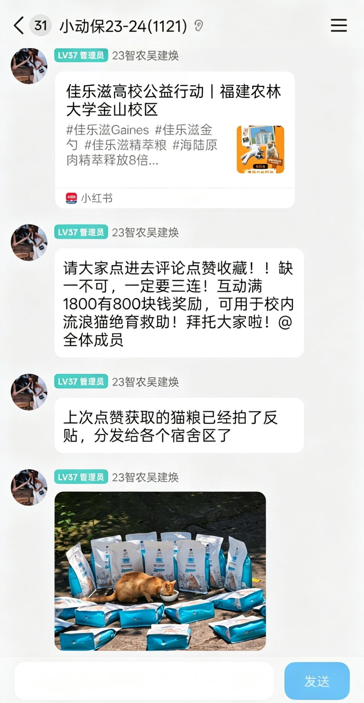
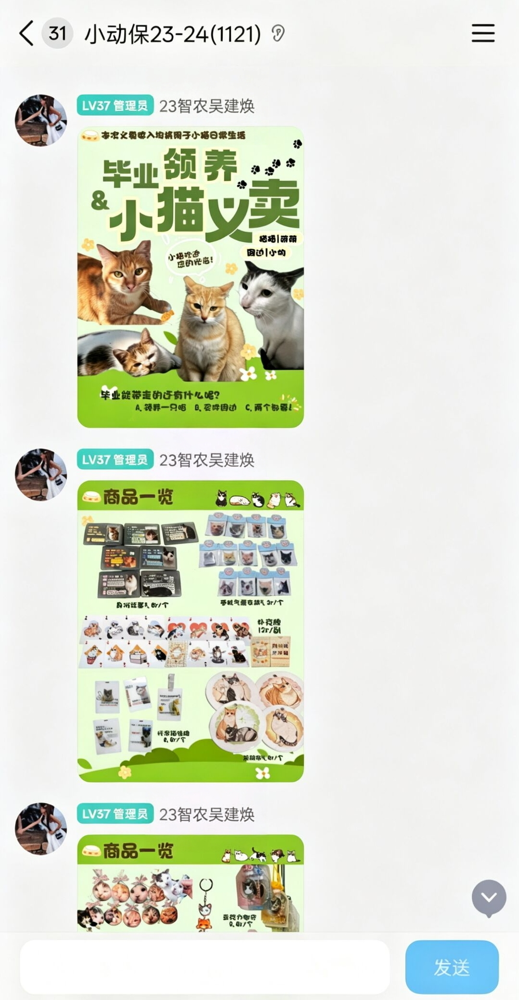
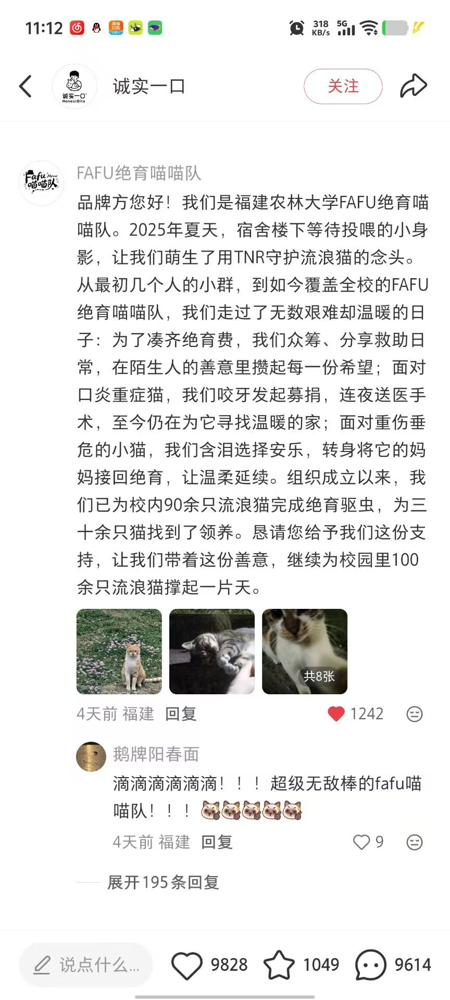
走进救助站，用双手给流浪动物一个温暖的拥抱。
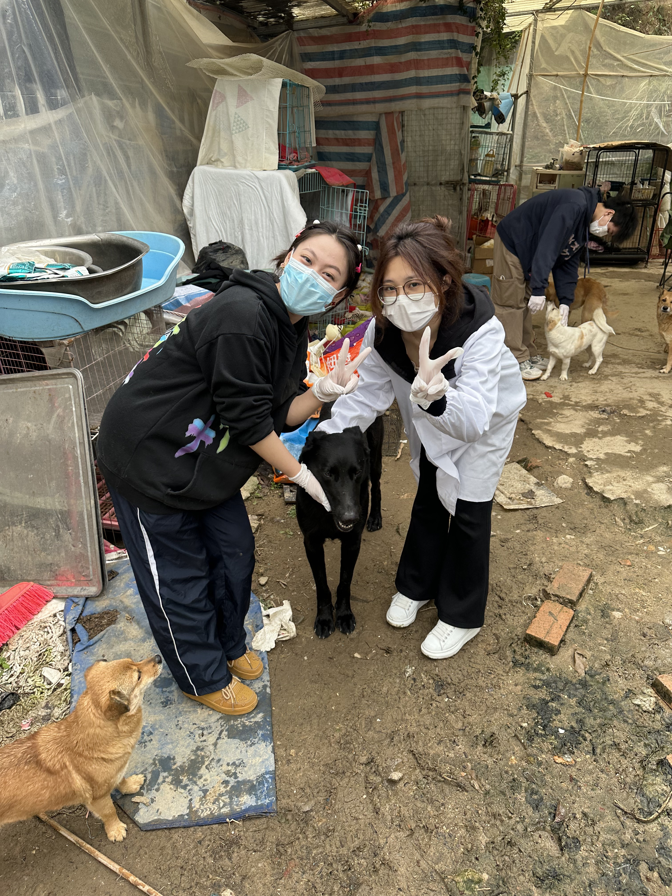
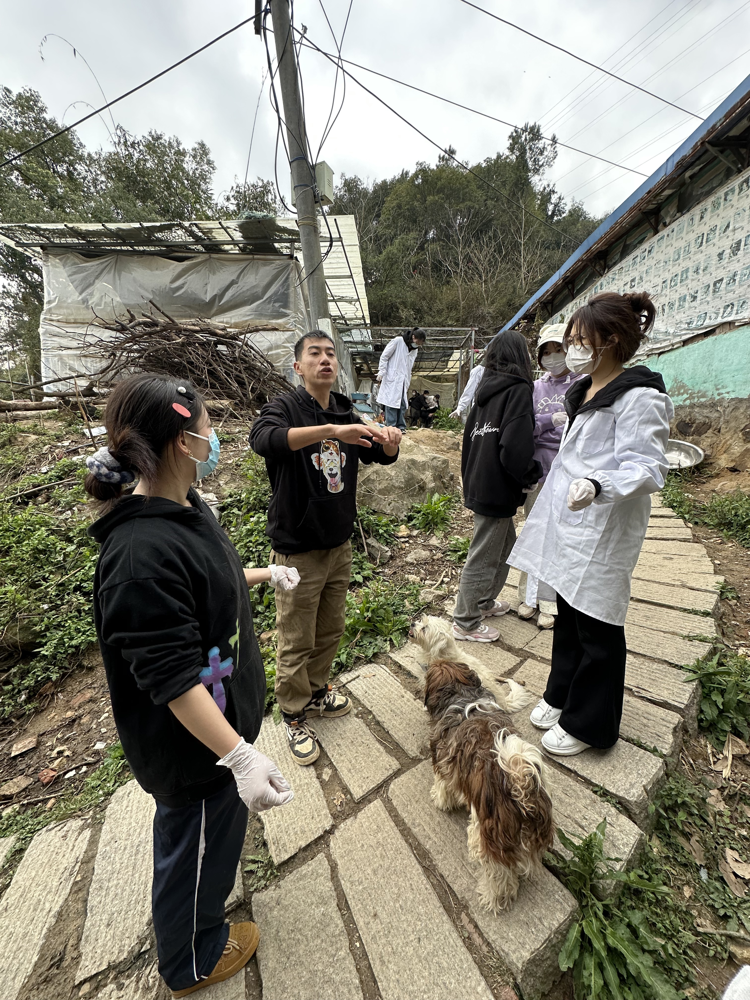
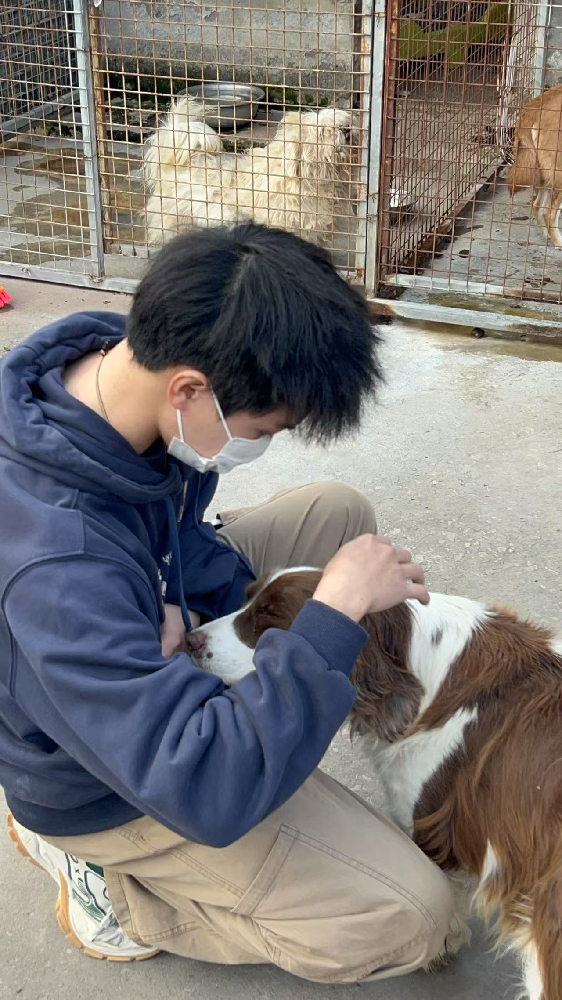
从筹备到执行，每一步都用心。
规划产品陈列方案，设计用户动线与指引，优化现场体验与转化路径。
海报、易拉宝、价签……统一视觉风格，让IP形象走进现实场景。
活动期间持续跟踪销售数据，实时调整策略，确保每一分善款都不被浪费。
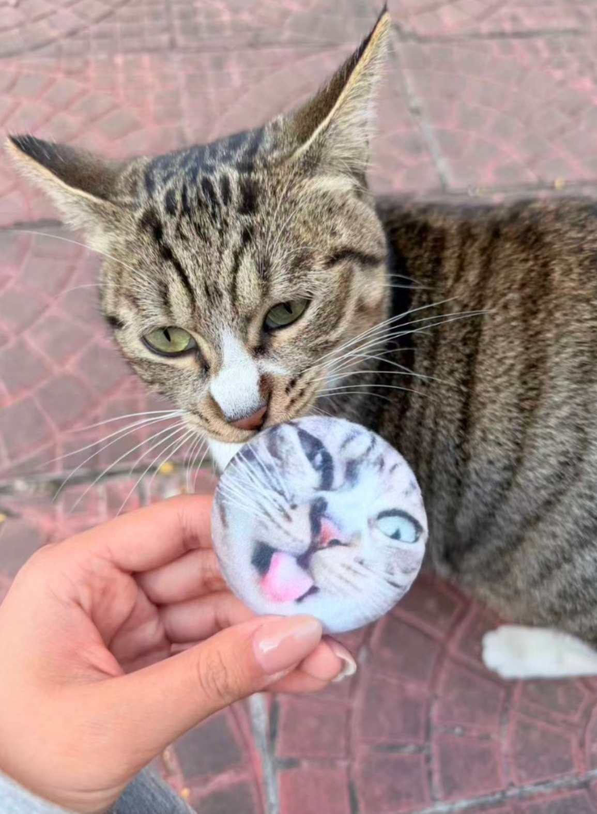
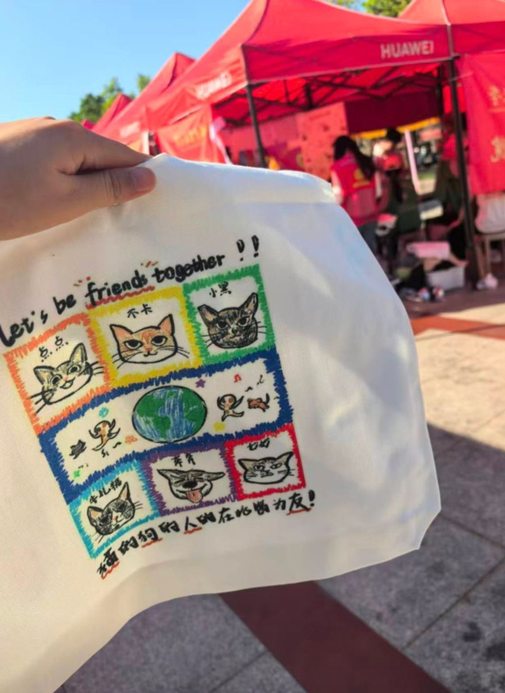
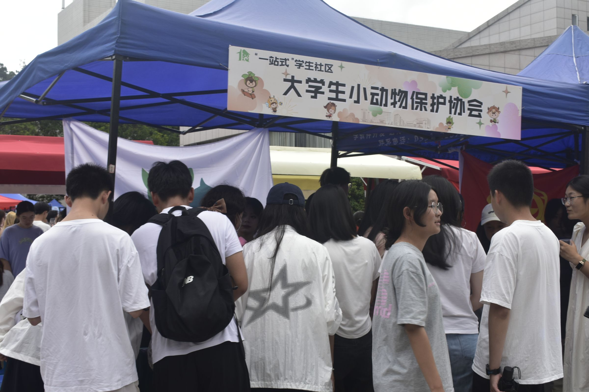
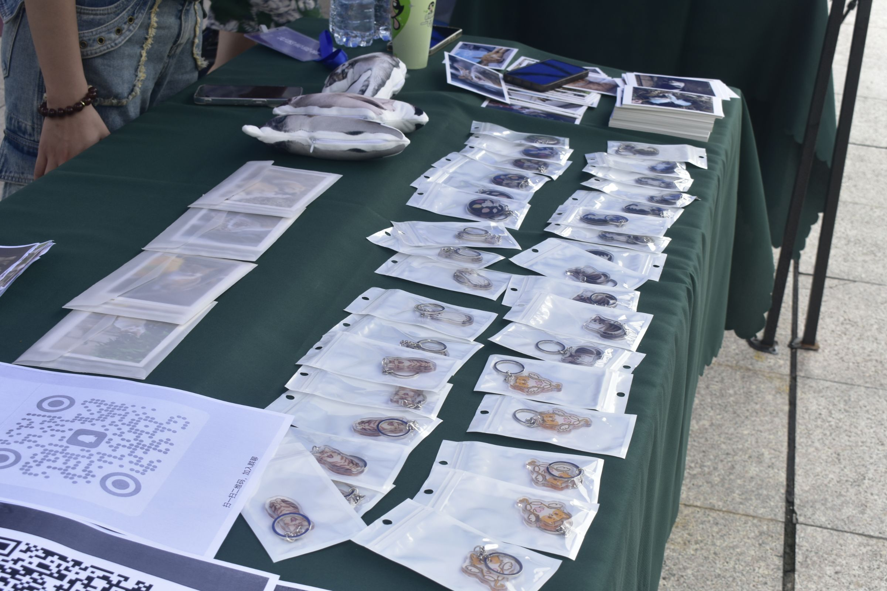
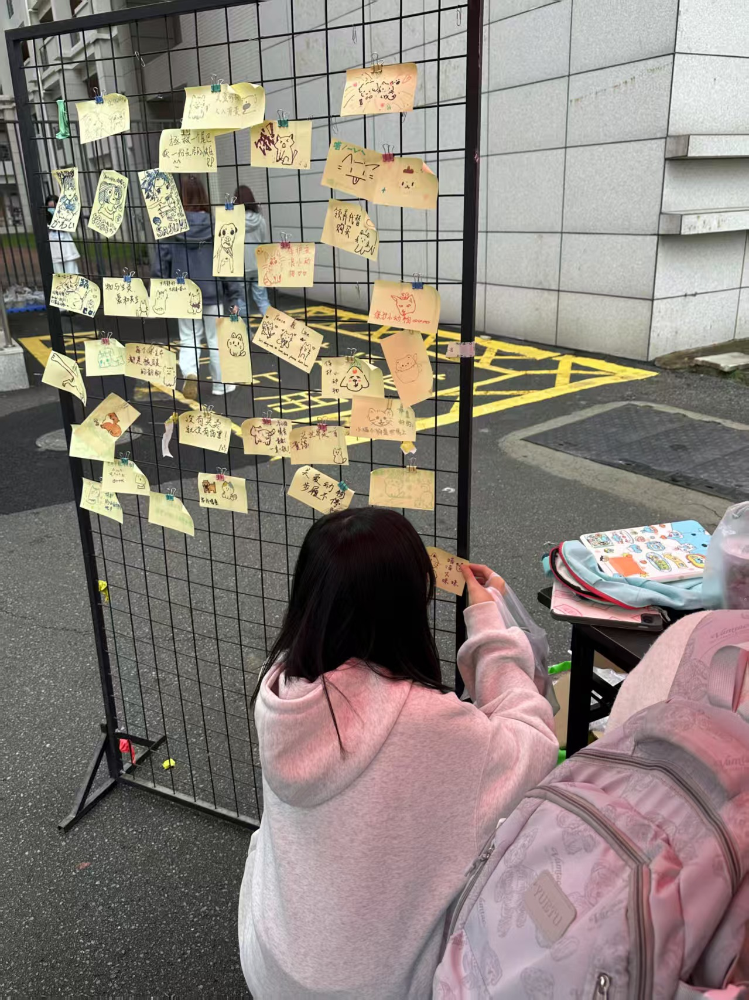
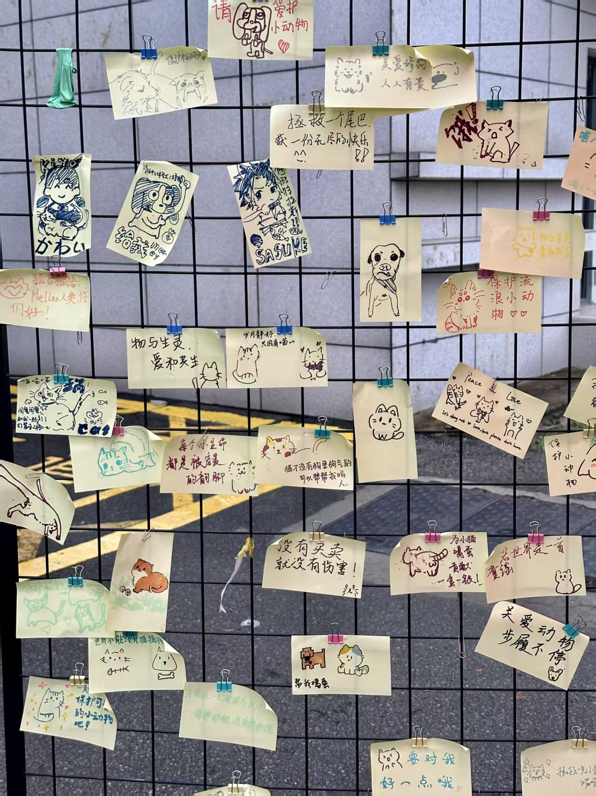
用数据驱动每一次迭代，让爱心精准落地。
各品类销售表现
低价高频品类（钥匙串、贴纸）贡献52%销量，高情感附加值产品复购率更高。
流量与转化来源分析
线下摆摊仍是核心场景，社群运营贡献28.5%流量，1121人社群是持续转化的关键阵地。